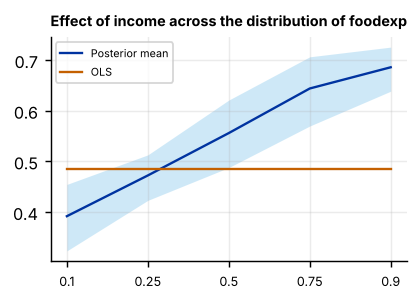

Run this model on your own data in Open Econometric Systems →
Step 1The question and the model
Does an extra unit of income raise food spending by the same amount for a household that spends little on food as for one that spends a lot? Engel (1857) asked this for working-class households, and the data of Koenker and Bassett (1982) are the standard example: annual income and food expenditure of 235 households. A regression for the mean gives one slope. But the households that spend much more on food than their income predicts may respond differently from those that spend much less, and the mean cannot show it.
The quantile regression of Koenker and Bassett models a chosen quantile of the outcome:
so that \(\tau = 0.5\) is the median line and \(\tau = 0.9\) is the line below which 90% of the households lie, given their income. The coefficients \(\beta(\tau)\) are found by minimising an asymmetric absolute loss, the check function. The Bayesian version (Yu and Moyeed 2001) turns that loss into a likelihood, the asymmetric Laplace distribution, whose maximum is the quantile-regression line, and adds a prior. Kozumi and Kobayashi (2011) write the asymmetric Laplace as a mixture of normals with an exponential mixing variable, which gives exact Gibbs conditionals, so the sampler is simple and fast.
Two points need care, and the engine handles both.
- The asymmetric Laplace is a working model, not a belief about the errors. Its centre is right for any error distribution, but its spread is not: the raw posterior intervals are too narrow, often by half. Yang, Wang and He (2016) show how to correct them: rescale the draws so that their covariance equals the sandwich covariance of the quantile-regression estimator. The engine does this by default; Step 5 shows how much it matters.
- Each quantile is a separate model. The model for \(\tau = 0.1\) and the model for \(\tau = 0.9\) are estimated separately, so nothing forces the lines not to cross. In a well-specified model with enough data they do not.
| Output | What it answers |
|---|---|
| Coefficients at each quantile | Posterior mean, standard deviation, 95% interval and P(> 0), next to the ordinary quantile-regression estimate |
| Difference between quantiles | Whether the effect at the highest quantile differs from the lowest, with an interval and a probability |
| Calibration | The share of observations below each fitted line, which should equal the quantile |
| Diagnostics | R-hat and the effective sample size of the sampler |
How to write it: the model
We estimate the effect of income on food expenditure at the 10th, 25th, 50th, 75th and 90th conditional quantiles by Bayesian quantile regression (Yu and Moyeed 2001). The likelihood is the asymmetric Laplace distribution, sampled by the normal-exponential mixture Gibbs sampler of Kozumi and Kobayashi (2011), with independent N(0, 10²) priors on the standardised coefficients. Because the asymmetric Laplace is a working likelihood, the posterior draws are rescaled to the sandwich covariance of the quantile-regression estimator (Yang, Wang and He 2016). We run two chains of 2,000 draws after 1,000 burn-in draws and check convergence with R-hat and effective sample sizes.
Step 2Load the data
import numpy as np
import pandas as pd
import oes_engine as oes # pip install -e open-econometric-systems/oes-engine
data = open("engel.csv").read()
d = pd.read_csv("engel.csv")
print(d.shape)
print(d.describe().round(1).loc[["mean", "std", "min", "max"]])
print("food share of income, poorest fifth:", (d.foodexp / d.income)[d.income <= d.income.quantile(.2)].mean().round(3),
" richest fifth:", (d.foodexp / d.income)[d.income >= d.income.quantile(.8)].mean().round(3))(235, 2)
income foodexp
mean 982.5 624.2
std 519.2 276.5
min 377.1 242.3
max 4957.8 2032.7
food share of income, poorest fifth: 0.703 richest fifth: 0.592How to read it
There are 235 households. Mean income is 982 and mean food expenditure 624, in the same currency units, and both are skewed (the richest household earns 4,958). The poorest fifth spends 70% of its income on food and the richest fifth 59%: this is Engel's law, a falling food share. It also means that the relation between income and food is not a single line: the spread of food spending widens with income. A mean regression assumes this away; quantile regression does not.
Step 3Estimate
spec = dict(y="foodexp", x=["income"], quantiles="0.1, 0.25, 0.5, 0.75, 0.9", draws=2000, burn=1000)
r = oes.run("bayes_qr", data, spec)
oes.summary(r)
oes.show(r, "Posterior of the coefficients")
oes.plot(r)Observations: 235
Regressors: 1
Quantiles: 0.1, 0.25, 0.5, 0.75, 0.9
Largest R-hat: 1.008
Smallest effective sample size: 392.0
Posterior of the coefficients at each quantile
Variable Mean Std. dev. 2.5% 97.5% P(> 0) Frequentist quantile regression
Quantile
0.1 const 113.8479 24.4535 68.3761 162.5268 1.000 110.1416
0.1 income 0.3919 0.0346 0.3234 0.4546 1.000 0.4018
0.25 const 95.7517 18.1103 60.9207 132.9262 1.000 95.4835
0.25 income 0.4723 0.0229 0.4231 0.5129 1.000 0.4741
0.5 const 85.7537 25.4306 35.4495 137.6897 0.999 81.4823
0.5 income 0.5560 0.0331 0.4879 0.6211 1.000 0.5602
0.75 const 61.9537 26.4203 14.2614 116.7865 0.996 62.3966
0.75 income 0.6440 0.0351 0.5699 0.7066 1.000 0.6440
0.9 const 65.0458 19.9702 29.8831 104.5683 1.000 67.3509
0.9 income 0.6859 0.0237 0.6387 0.7257 1.000 0.6863
Note: Asymmetric-Laplace likelihood, normal prior with s.d. 10 on the standardised coefficients, 2 chains of 2000 draws after 1000 burn-in. Draws rescaled to the sandwich covariance of the quantile-regression estimator (Yang, Wang and He 2016), so intervals have the right width. The last column is the ordinary (check-function) quantile-regression estimate, which the posterior mean should be close to.
How to read it
The first block says that the sampler is sound: the largest R-hat is 1.008 and the smallest effective sample size is 392 out of 4,000 draws.
The slope on income rises steadily with the quantile: 0.39 at the 10th, 0.47 at the 25th, 0.56 at the median, 0.64 at the 75th and 0.69 at the 90th. A household whose food spending is low for its income spends 39 cents of each extra unit of income on food; one whose spending is high spends 69 cents. The OLS slope, 0.485, is a weighted average that describes neither. The intervals are wide enough to separate the ends: 0.32 to 0.45 at the 10th quantile and 0.64 to 0.73 at the 90th do not overlap. The last column shows that the posterior means are close to the ordinary quantile-regression estimates (for the slope, within 0.01), as they should be, because both are centred on the minimum of the same check function. The Bayesian answer adds the full posterior and the probability that each coefficient is positive.
The chart shows the slope across quantiles with its 95% band, against the horizontal OLS line: the OLS line lies inside the band only in the middle of the distribution.
Step 4Do the effects differ across quantiles?
oes.show(r, "Does the effect differ")
oes.show(r, "Calibration")Does the effect differ between the 0.1 and the 0.9 quantile?
Slope at 0.1 Slope at 0.9 Difference 2.5% 97.5% P(difference > 0)
Variable
income 0.3919 0.6859 0.294 0.2127 0.3742 1.0
Note: A difference whose interval excludes zero means the regressor changes the spread or the skew of the outcome, not only its centre.
Calibration: share of observations below the fitted quantile
Share below Gap
Quantile
0.1 0.094 0.006
0.25 0.243 0.007
0.5 0.506 0.006
0.75 0.740 0.010
0.9 0.894 0.006
Note: A well-fitted quantile line has the share below it close to the quantile itself.How to read it
The slope at the 90th quantile exceeds that at the 10th by 0.29, with a 95% interval of 0.21 to 0.37 and a posterior probability of 1.0 that the difference is positive. Income does not only shift the food distribution; it stretches it. The second table is a check on the fit: the share of households below each fitted line is 0.094, 0.243, 0.506, 0.740 and 0.894 for quantiles 0.1, 0.25, 0.5, 0.75 and 0.9, within 0.01 of the target in every case. If a line were misplaced the share would be off: a gap of more than a few hundredths means the linear form is wrong at that quantile.
The difference treats the estimates at the two quantiles as independent. In truth they are positively correlated, which would make the interval for the difference narrower, so the reported interval is conservative.
Step 5Why the interval is rescaled
import statsmodels.api as sm
Xc = sm.add_constant(d.income.values); yv = d.foodexp.values
rng = np.random.default_rng(0)
idx = [rng.integers(0, len(d), len(d)) for _ in range(300)]
rows = []
for tau in (0.1, 0.5, 0.9):
boot = np.std([sm.QuantReg(yv[i], Xc[i]).fit(q=tau, max_iter=5000).params[1] for i in idx])
raw = oes.run("bayes_qr", data, dict(spec, quantiles=str(tau), adjust="no"))["tables"][0]["rows"][1][3]
adj = oes.run("bayes_qr", data, dict(spec, quantiles=str(tau)))["tables"][0]["rows"][1][3]
rows.append([tau, raw, adj, round(boot, 4)])
print(pd.DataFrame(rows, columns=["quantile", "raw posterior s.d.", "rescaled s.d.", "bootstrap s.d."]))quantile raw posterior s.d. rescaled s.d. bootstrap s.d. 0 0.1 0.0160 0.0346 0.0480 1 0.5 0.0161 0.0330 0.0342 2 0.9 0.0137 0.0237 0.0258
How to read it
The table compares three estimates of the standard deviation of the slope. The raw posterior of the asymmetric Laplace is 0.016 at the 10th quantile, 0.016 at the median and 0.014 at the 90th: it is roughly half of what a bootstrap of the households gives (0.048, 0.034, 0.026). The rescaled value, which is what the engine reports, is 0.035, 0.033 and 0.024, close to the bootstrap at the median and the 90th quantile and somewhat below it at the 10th. The raw intervals are too narrow because the asymmetric Laplace assumes that the errors have the same shape at every observation; real errors, here with spread that grows with income, do not. Reporting the raw posterior would overstate how sure you are, so keep the default, and set the adjustment to "no" only to show the problem.
Step 6Diagnostics: does the sampler converge?
oes.show(r, "MCMC convergence")
import statsmodels.api as sm
ols = sm.OLS(d.foodexp, sm.add_constant(d.income)).fit()
print("OLS slope:", ols.params["income"].round(4), " std. err.", ols.bse["income"].round(4))MCMC convergence diagnostics
Parameter R-hat Effective sample size
Quantile
0.9 income 1.005 392.0
0.1 income 1.008 419.0
0.1 const 1.004 427.0
0.9 const 1.003 458.0
0.75 income 1.000 580.0
0.75 const 1.000 597.0
0.5 income 1.004 641.0
0.5 const 1.003 646.0
0.25 income 1.003 672.0
0.25 const 1.000 744.0
Note: The 10 parameters with the smallest effective sample size (of 10). Extreme quantiles mix more slowly; add draws if the effective sample size is below a few hundred.
OLS slope: 0.4852 std. err. 0.0144How to read it
The slowest parameters are those at the extreme quantiles, the 90th and the 10th, with effective sample sizes of 392 and 419 out of 4,000 draws; the median has 641. R-hat is at most 1.008 for every parameter. Quantile regression at the tails has fewer observations that carry information, so the chains are more correlated; add draws when the smallest effective sample size is below a few hundred or you need the tail probabilities of the 2.5% and 97.5% bounds to be stable. The OLS slope, 0.485 with standard error 0.014, is the single number that the five lines replace.
Step 7Robustness: the prior
rows = []
for s in (1, 10, 100):
rs = oes.run("bayes_qr", data, dict(spec, prior_sd=s, quantiles="0.1, 0.9"))
for q in rs["tables"][0]["rows"]:
if q[1] == "income":
rows.append([s, q[0], q[2], q[3], q[4], q[5]])
print(pd.DataFrame(rows, columns=["prior s.d.", "quantile", "slope", "std. dev.", "2.5%", "97.5%"]))prior s.d. quantile slope std. dev. 2.5% 97.5% 0 1 0.1 0.3920 0.0345 0.3244 0.4564 1 1 0.9 0.6844 0.0237 0.6381 0.7271 2 10 0.1 0.3919 0.0346 0.3234 0.4546 3 10 0.9 0.6852 0.0237 0.6383 0.7266 4 100 0.1 0.3916 0.0346 0.3223 0.4545 5 100 0.9 0.6854 0.0237 0.6361 0.7273
How to read it
The prior standard deviation of the standardised coefficients is varied from 1 to 100 for the 10th and 90th quantiles. The slope at the 10th quantile is 0.392, 0.392 and 0.392 and at the 90th 0.684, 0.685 and 0.685; the intervals change in the third decimal. With 235 observations and a weak prior the data decide, so the choice of the prior does not matter. It could matter in a small sample or with many regressors; then compare several values as here.
Step 8Diagnostics: do the intervals cover?
A correction that is applied by default should be checked. Simulate 30 samples of 200 observations with a known quantile slope, \(y = 1 + 2x + (0.5 + x)\varepsilon\), for which the slope at quantile \(\tau\) is \(2 + z_\tau\), and count how often the 95% interval contains the truth.
rng = np.random.default_rng(0)
hits = []
for s in range(30):
x = rng.uniform(0, 2, 200)
y = 1 + 2 * x + (0.5 + x) * rng.normal(size=200) # the true slope at quantile tau is 2 + z_tau
rs = oes.run("bayes_qr", pd.DataFrame({"y": y, "x": x}).to_csv(index=False), dict(y="y", x=["x"], quantiles="0.1, 0.9", draws=600, burn=300, seed=s))
sl = {q[0]: q for q in rs["tables"][0]["rows"] if q[1] == "x"}
hits.append([sl["0.1"][4] <= 2 - 1.2816 <= sl["0.1"][5], sl["0.9"][4] <= 2 + 1.2816 <= sl["0.9"][5]])
print("coverage of the 95% interval, quantile 0.1 and 0.9:", np.mean(hits, axis=0).round(2))coverage of the 95% interval, quantile 0.1 and 0.9: [0.93 0.93]
How to read it
The 95% intervals contain the true slope in 93% of the 30 samples at both the 10th and the 90th quantile, which is what 95% means up to simulation noise (30 samples give a standard error of about 4 points). The raw posterior, in the same experiment, covered the truth only 77% and 70% of the time, which is the defect that the rescaling removes. The test suite repeats the experiment for the median with 24 samples and requires at least 85% coverage.
Step 9Several regressors: the returns to schooling
The same model with several regressors. The data are 663 men from Wooldridge's WAGE2; the outcome is the log wage, so a coefficient of 0.05 is about 5% more pay.
wage = open("wage2.csv").read()
w = oes.run("bayes_qr", wage, dict(y="lwage", x=["educ", "exper", "tenure", "IQ"], quantiles="0.1, 0.5, 0.9", draws=2000, burn=1000))
oes.show(w, "Posterior of the coefficients")
oes.show(w, "Does the effect differ")Posterior of the coefficients at each quantile
Variable Mean Std. dev. 2.5% 97.5% P(> 0) Frequentist quantile regression
Quantile
0.1 const 4.7325 0.3037 4.1541 5.3298 1.000 4.6915
0.1 educ 0.0500 0.0201 0.0114 0.0888 0.993 0.0517
0.1 exper 0.0251 0.0087 0.0077 0.0416 0.999 0.0275
0.1 tenure 0.0230 0.0043 0.0139 0.0308 1.000 0.0234
0.1 IQ 0.0046 0.0017 0.0012 0.0081 0.995 0.0046
0.5 const 5.0975 0.1684 4.7954 5.4358 1.000 5.1091
0.5 educ 0.0564 0.0112 0.0339 0.0781 1.000 0.0541
0.5 exper 0.0163 0.0044 0.0076 0.0249 1.000 0.0171
0.5 tenure 0.0106 0.0039 0.0029 0.0182 0.997 0.0093
0.5 IQ 0.0069 0.0016 0.0036 0.0100 1.000 0.0071
0.9 const 5.8890 0.1850 5.5093 6.2369 1.000 5.8574
0.9 educ 0.0497 0.0105 0.0283 0.0705 1.000 0.0515
0.9 exper 0.0147 0.0059 0.0025 0.0259 0.992 0.0141
0.9 tenure -0.0031 0.0037 -0.0105 0.0040 0.197 -0.0010
0.9 IQ 0.0052 0.0016 0.0021 0.0086 0.999 0.0052
Note: Asymmetric-Laplace likelihood, normal prior with s.d. 10 on the standardised coefficients, 2 chains of 2000 draws after 1000 burn-in. Draws rescaled to the sandwich covariance of the quantile-regression estimator (Yang, Wang and He 2016), so intervals have the right width. The last column is the ordinary (check-function) quantile-regression estimate, which the posterior mean should be close to.
Does the effect differ between the 0.1 and the 0.9 quantile?
Slope at 0.1 Slope at 0.9 Difference 2.5% 97.5% P(difference > 0)
Variable
educ 0.0500 0.0497 -0.0003 -0.0463 0.0432 0.511
exper 0.0251 0.0147 -0.0104 -0.0311 0.0105 0.168
tenure 0.0230 -0.0031 -0.0261 -0.0371 -0.0147 0.000
IQ 0.0046 0.0052 0.0006 -0.0041 0.0053 0.606
Note: A difference whose interval excludes zero means the regressor changes the spread or the skew of the outcome, not only its centre.How to read it
The return to a year of education is nearly the same across the wage distribution: 5.0% at the 10th quantile, 5.6% at the median and 5.0% at the 90th. The difference between the top and the bottom is \(-0.0003\), with an interval of \(-0.046\) to 0.043, so the data show no sign that schooling pays more for high earners, holding experience, tenure and IQ constant. Tenure is different. At the 10th quantile each year with the employer adds 2.3% (interval 1.4% to 3.1%); at the 90th it adds nothing distinguishable from zero (\(-0.3\%\), interval \(-1.1\%\) to 0.4%, with a posterior probability of only 0.20 that it is positive). The difference, \(-0.026\), has an interval of \(-0.037\) to \(-0.015\): low earners gain from staying, high earners do not. Experience falls from 2.5% to 1.5% a year but the difference could be zero (interval \(-0.031\) to 0.011), and IQ is stable. A mean regression would report one tenure coefficient and miss the contrast.
Step 10Write the results
How to write it: results
The effect of income on food expenditure rises across the conditional distribution. The posterior mean of the slope is 0.39 at the 10th quantile (95% interval 0.32 to 0.45), 0.56 at the median and 0.69 at the 90th (0.64 to 0.73), against 0.485 in OLS. The slope at the 90th quantile exceeds that at the 10th by 0.29 (95% interval 0.21 to 0.37; posterior probability of a positive difference 1.00). The posterior means are within 0.01 of the ordinary quantile-regression estimates, the share of households below each fitted line is within 0.01 of its quantile, and the largest R-hat is 1.008. Intervals are rescaled to the sandwich covariance of the quantile-regression estimator; in simulation their coverage was 93%. In the wage data the return to schooling is about 5% a year at every quantile, whereas the effect of tenure falls from 2.3% a year at the 10th quantile to zero at the 90th.
| Report | What | Where |
|---|---|---|
| Model | Asymmetric-Laplace likelihood, prior, correction of the intervals | Step 1 |
| Coefficients | Mean, interval and P(> 0) at each quantile | Step 3 |
| Heterogeneity | Difference between the highest and lowest quantile, calibration | Step 4 |
| Interval correction | Raw, rescaled and bootstrap standard deviations | Step 5 |
| Convergence | R-hat and effective sample sizes | Step 6 |
| Robustness | Other prior scales | Step 7 |
| Coverage | Simulated coverage of the intervals | Step 8 |
References. Koenker and Bassett (1978), Econometrica; Koenker and Bassett (1982), Econometrica; Yu and Moyeed (2001), Statistics and Probability Letters; Kozumi and Kobayashi (2011), Journal of Statistical Computation and Simulation; Yang, Wang and He (2016), International Statistical Review; Powell (1991), Asymptotic normality of the quantile regression estimator; Koenker (2005), Quantile Regression, Cambridge University Press.